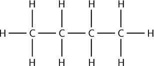
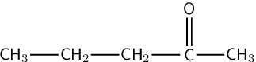

Match the organic compound in Column A with its isomer in Column B:
Column A | Column B | |
1 | \(\text{CH}_{3}\text{CH}_{2}\text{CH}_{2}(\text{OH})\) | \(\text{CH}_{3}\text{CH}(\text{CH}_{3})\text{CH}_{3}\) |
2 |  <code>
(-3.2,-1.2)(2.2,1.2)
\rput(-3,0){H}
\psline(-2.2,0)(-2.8,0)
\rput(-2,0){C}
\psline(-2,0.2)(-2,0.8)
\rput(-2,1){H}
\psline(-2,-0.2)(-2,-0.8)
\rput(-2,-1){H}
\psline(-1.2,0)(-1.8,0)
\rput(-1,0){C}
\psline(-1,0.2)(-1,0.8)
\rput(-1,1){H}
\psline(-1,-0.2)(-1,-0.8)
\rput(-1,-1){H}
\psline(-0.2,0)(-0.8,0)
\rput(0,0){C}
\psline(0,0.2)(0,0.8)
\rput(0,1){H}
\psline(0,-0.2)(0,-0.8)
\rput(0,-1){H}
\psline(0.2,0)(0.8,0)
\rput(1,0){C}
\psline(1,0.2)(1,0.8)
\rput(1,1){H}
\psline(1,-0.2)(1,-0.8)
\rput(1,-1){H}
\psline(1.2,0)(1.8,0)
\rput(2,0){H}
</code> |  <code>
(0.4,-0.5)(6.1,1.2)
\rput(0.8,0){CH$_{3}$}
\psline(1.15,0)(1.75,0)
\rput(2.1,0){CH$_{2}$}
\psline(2.45,0)(3.05,0)
\rput(3.4,0){CH$_{2}$}
\psline(3.75,0)(4.35,0)
\rput(4.55,0){C}
\psline(4.5,0.2)(4.5,0.8)
\psline(4.6,0.2)(4.6,0.8)
\rput(4.55,1){O}
\psline(4.7,0)(5.3,0)
\rput(5.65,0){CH$_{3}$}
</code> |
3 | <code>
(-4.2,-2.2)(1.2,1.2)
\rput(-4,0){\text{H}}
\psline(-3.8,0)(-3.2,0)
\rput(-3,0){\text{C}}
\psline(-3,0.2)(-3,0.8)
\rput(-3,1){\text{H}}
\psline(-3,-0.2)(-3,-0.8)
\rput(-3,-1){\text{C}}
\psline(-2.8,-1)(-2.2,-1)
\rput(-2,-1){\text{H}}
\psline(-3.2,-1)(-3.8,-1)
\rput(-4,-1){\text{H}}
\psline(-3,-1.2)(-3,-1.8)
\rput(-3,-2){\text{H}}
\psline(-2.8,0)(-1.7,0)
\rput(-1.5,0){\text{C}}
\psline(-1.45,0.2)(-1.45,0.8)
\psline(-1.55,0.2)(-1.55,0.8)
\rput(-1.5,1){\text{O}}
\psline(-1.3,0)(-0.2,0)
\rput(0,0){\text{C}}
\psline(0,0.2)(0,0.8)
\rput(0,1){\text{H}}
\psline(0,-0.2)(0,-0.8)
\rput(0,-1){\text{C}}
\psline(-0.2,-1)(-0.8,-1)
\rput(-1,-1){\text{H}}
\psline(0.2,-1)(0.8,-1)
\rput(1,-1){\text{H}}
\psline(0,-1.2)(0,-1.8)
\rput(0,-2){\text{H}}
\psline(0.2,0)(0.8,0)
\rput(1,0){\text{H}}
</code> | \(\text{CH}_{3}\text{CH}(\text{OH})\text{CH}_{3}\) |
-
A1 (\(\text{CH}_{3}\text{CH}_{2}\text{CH}_{2}(\text{OH})\)) and B3 (\(\text{CH}_{3}\text{CH}(\text{OH})\text{CH}_{3}\)) are isomers.
-
<code> (-2.2,-1.2)(3.2,1.2) \rput(-2,1){\textbf{A2}} \rput(-2,0){\textbf{H}} \psline(-1.8,0)(-1.2,0) \rput(-1,0){\textbf{C}} \psline(-1,0.2)(-1,0.8) \rput(-1,1){\textbf{H}} \psline(-1,-0.2)(-1,-0.8) \rput(-1,-1){\textbf{H}} \psline(-0.8,0)(-0.2,0) \rput(0,0){\textbf{C}} \psline(0,0.2)(0,0.8) \rput(0,1){\textbf{H}} \psline(0,-0.2)(0,-0.8) \rput(0,-1){\textbf{H}} \psline(0.2,0)(0.8,0) \rput(1,0){\textbf{C}} \psline(1,0.2)(1,0.8) \rput(1,1){\textbf{H}} \psline(1,-0.2)(1,-0.8) \rput(1,-1){\textbf{H}} \psline(1.2,0)(1.8,0) \rput(2,0){\textbf{C}} \psline(2,0.2)(2,0.8) \rput(2,1){\textbf{H}} \psline(2,-0.2)(2,-0.8) \rput(2,-1){\textbf{H}} \psline(2.2,0)(2.8,0) \rput(3,0){\textbf{H}} </code>and B1 (\(\text{CH}_{3}\text{CH}(\text{CH}_{3})\text{CH}_{3}\)) are isomers.
-
<code> (-4.2,-2.2)(1.2,1.2) \rput(-4,1){\textbf{A3}} \rput(-4,0){\text{H}} \psline(-3.8,0)(-3.2,0) \rput(-3,0){\text{C}} \psline(-3,0.2)(-3,0.8) \rput(-3,1){\text{H}} \psline(-3,-0.2)(-3,-0.8) \rput(-3,-1){\text{C}} \psline(-2.8,-1)(-2.2,-1) \rput(-2,-1){\text{H}} \psline(-3.2,-1)(-3.8,-1) \rput(-4,-1){\text{H}} \psline(-3,-1.2)(-3,-1.8) \rput(-3,-2){\text{H}} \psline(-2.8,0)(-1.7,0) \rput(-1.5,0){\text{C}} \psline(-1.45,0.2)(-1.45,0.8) \psline(-1.55,0.2)(-1.55,0.8) \rput(-1.5,1){\text{O}} \psline(-1.3,0)(-0.2,0) \rput(0,0){\text{C}} \psline(0,0.2)(0,0.8) \rput(0,1){\text{H}} \psline(0,-0.2)(0,-0.8) \rput(0,-1){\text{C}} \psline(-0.2,-1)(-0.8,-1) \rput(-1,-1){\text{H}} \psline(0.2,-1)(0.8,-1) \rput(1,-1){\text{H}} \psline(0,-1.2)(0,-1.8) \rput(0,-2){\text{H}} \psline(0.2,0)(0.8,0) \rput(1,0){\text{H}} </code>and
<code> (0.4,-0.5)(6,1.2) \rput(0.8,1){\textbf{B2}} \rput(0.8,0){CH$_{3}$} \psline(1.15,0)(1.75,0) \rput(2.1,0){CH$_{2}$} \psline(2.45,0)(3.05,0) \rput(3.4,0){CH$_{2}$} \psline(3.75,0)(4.35,0) \rput(4.55,0){C} \psline(4.5,0.2)(4.5,0.8) \psline(4.6,0.2)(4.6,0.8) \rput(4.55,1){O} \psline(4.7,0)(5.3,0) \rput(5.65,0){CH$_{3}$} </code>are isomers
Give the ketone isomer of butanal:

<code>
(-2.2,-1.2)(3.2,1.2)
\rput(-2,0){\textbf{H}}
\psline(-1.8,0)(-1.2,0)
\rput(-1,0){\textbf{C}}
\psline(-1,0.2)(-1,0.8)
\rput(-1,1){\textbf{H}}
\psline(-1,-0.2)(-1,-0.8)
\rput(-1,-1){\textbf{H}}
\psline(-0.8,0)(-0.2,0)
\rput(0,0){\textbf{C}}
\psline(0,0.2)(0,0.8)
\rput(0,1){\textbf{H}}
\psline(0,-0.2)(0,-0.8)
\rput(0,-1){\textbf{H}}
\psline(0.2,0)(0.8,0)
\rput(1,0){\textbf{C}}
\psline(1,0.2)(1,0.8)
\rput(1,1){\textbf{H}}
\psline(1,-0.2)(1,-0.8)
\rput(1,-1){\textbf{H}}
\psline(1.2,0)(1.8,0)
\rput(2,0){\textbf{C}}
\psline(1.95,0.2)(1.95,0.8)
\psline(2.05,0.2)(2.05,0.8)
\rput(2,1){\textbf{O}}
\psline(2.2,0)(2.8,0)
\rput(3,0){\textbf{H}}
</code>A ketone requires that the carbonyl group is not at the end of the chain. Therefore it must be on carbon 2. The isomer must have the same number of each type of atom: \(\text{C}_{4}\text{H}_{8}\text{O}\)
<code>
(-3.2,-1.2)(8.2,1.2)
\rput(0,0){
\rput(-3,0){\textbf{H}}
\psline(-2.8,0)(-2.2,0)
\rput(-2,0){\textbf{C}}
\psline(-2,0.2)(-2,0.8)
\rput(-2,1){\textbf{H}}
\psline(-2,-0.2)(-2,-0.8)
\rput(-2,-1){\textbf{H}}
\psline(-1.8,0)(-1.2,0)
\rput(-1,0){\textbf{C}}
\psline(-0.95,0.2)(-0.95,0.8)
\psline(-1.05,0.2)(-1.05,0.8)
\rput(-1,1){\textbf{O}}
\psline(-0.8,0)(-0.2,0)
\rput(0,0){\textbf{C}}
\psline(0,0.2)(0,0.8)
\rput(0,1){\textbf{H}}
\psline(0,-0.2)(0,-0.8)
\rput(0,-1){\textbf{H}}
\psline(0.2,0)(0.8,0)
\rput(1,0){\textbf{C}}
\psline(1,0.2)(1,0.8)
\rput(1,1){\textbf{H}}
\psline(1,-0.2)(1,-0.8)
\rput(1,-1){\textbf{H}}
\psline(1.2,0)(1.8,0)
\rput(2,0){\textbf{H}}
}
\rput(2.5,0){or}
\rput(5,0){
\rput(3,0){\textbf{H}}
\psline(2.8,0)(2.2,0)
\rput(2,0){\textbf{C}}
\psline(2,0.2)(2,0.8)
\rput(2,1){\textbf{H}}
\psline(2,-0.2)(2,-0.8)
\rput(2,-1){\textbf{H}}
\psline(1.8,0)(1.2,0)
\rput(1,0){\textbf{C}}
\psline(0.95,0.2)(0.95,0.8)
\psline(1.05,0.2)(1.05,0.8)
\rput(1,1){\textbf{O}}
\psline(0.8,0)(0.2,0)
\rput(0,0){\textbf{C}}
\psline(0,0.2)(0,0.8)
\rput(0,1){\textbf{H}}
\psline(0,-0.2)(0,-0.8)
\rput(0,-1){\textbf{H}}
\psline(-0.2,0)(-0.8,0)
\rput(-1,0){\textbf{C}}
\psline(-1,0.2)(-1,0.8)
\rput(-1,1){\textbf{H}}
\psline(-1,-0.2)(-1,-0.8)
\rput(-1,-1){\textbf{H}}
\psline(-1.2,0)(-1.8,0)
\rput(-2,0){\textbf{H}}
}
</code>Give a carboxylic acid that is an isomer of:
<code>
(-4.2,-1.2)(3.2,1.2)
\rput(-4,0){\textbf{H}}
\psline(-3.8,0)(-3.2,0)
\rput(-3,0){\textbf{C}}
\psline(-3,0.2)(-3,0.8)
\rput(-3,1){\textbf{H}}
\psline(-3,-0.2)(-3,-0.8)
\rput(-3,-1){\textbf{H}}
\psline(-2.8,0)(-2.2,0)
\rput(-2,0){\textbf{C}}
\psline(-2,0.2)(-2,0.8)
\rput(-2,1){\textbf{H}}
\psline(-2,-0.2)(-2,-0.8)
\rput(-2,-1){\textbf{H}}
\psline(-1.8,0)(-1.2,0)
\rput(-1,0){\textbf{C}}
\psline(-0.95,0.2)(-0.95,0.8)
\psline(-1.05,0.2)(-1.05,0.8)
\rput(-1,1){\textbf{O}}
\psline(-0.8,0)(-0.2,0)
\rput(0,0){\textbf{O}}
\psline(0.2,0)(0.8,0)
\rput(1,0){\textbf{C}}
\psline(1,0.2)(1,0.8)
\rput(1,1){\textbf{H}}
\psline(1,-0.2)(1,-0.8)
\rput(1,-1){\textbf{H}}
\psline(1.2,0)(1.8,0)
\rput(2,0){\textbf{C}}
\psline(2,0.2)(2,0.8)
\rput(2,1){\textbf{H}}
\psline(2,-0.2)(2,-0.8)
\rput(2,-1){\textbf{H}}
\psline(2.2,0)(2.8,0)
\rput(3,0){\textbf{H}}
</code>The molecule is an ester. A carboxylic acid must have the \(-\text{COOH}\) functional group. The isomer must have the same number of each type of atom: \(\text{C}_{5}\text{H}_{10}\text{O}_{2}\). So there are four options:
One isomer with no branching methyl groups:
<code>
(-4.2,-1.7)(2.7,1.2)
\rput(-4,0){\textbf{H}}
\psline(-3.8,0)(-3.2,0)
\rput(-3,0){\textbf{C}}
\psline(-3,0.2)(-3,0.8)
\rput(-3,1){\textbf{H}}
\psline(-3,-0.2)(-3,-0.8)
\rput(-3,-1){\textbf{H}}
\psline(-2.8,0)(-2.2,0)
\rput(-2,0){\textbf{C}}
\psline(-2,0.2)(-2,0.8)
\rput(-2,1){\textbf{H}}
\psline(-2,-0.2)(-2,-0.8)
\rput(-2,-1){\textbf{H}}
\psline(-1.8,0)(-1.2,0)
\rput(-1,0){\textbf{C}}
\psline(-1,0.2)(-1,0.8)
\rput(-1,1){\textbf{H}}
\psline(-1,-0.2)(-1,-0.8)
\rput(-1,-1){\textbf{H}}
\psline(-0.8,0)(-0.2,0)
\rput(0,0){\textbf{C}}
\psline(0,0.2)(0,0.8)
\rput(0,1){\textbf{H}}
\psline(0,-0.2)(0,-0.8)
\rput(0,-1){\textbf{H}}
\psline(0.2,0)(0.8,0)
\rput(1,0){\textbf{C}}
\psline(1.05,0.2)(1.05,0.8)
\psline(0.95,0.2)(0.95,0.8)
\rput(1,1){\textbf{O}}
\psline(1.2,0)(1.8,0)
\rput(2,0){\textbf{O}}
\psline(2,-0.2)(2,-0.8)
\rput(2,-1){\textbf{H}}
\rput(-1,-1.5){\textbf{pentanoic acid}}
</code>Two isomers that have one branching methyl group:

<code>
(-4.2,-3.2)(7.3,1.2)
\rput(-4,0){\textbf{H}}
\psline(-3.8,0)(-3.2,0)
\rput(-3,0){\textbf{C}}
\psline(-3,0.2)(-3,0.8)
\rput(-3,1){\textbf{H}}
\psline(-3,-0.2)(-3,-0.8)
\rput(-3,-1){\textbf{H}}
\psline(-2.8,0)(-2.2,0)
\rput(-2,0){\textbf{C}}
\psline(-2,0.2)(-2,0.8)
\rput(-2,1){\textbf{H}}
\psline(-2,-0.2)(-2,-0.8)
\rput(-2,-1){\textbf{H}}
\psline(-1.8,0)(-1.2,0)
\rput(-1,0){\textbf{C}}
\psline(-1,0.2)(-1,0.8)
\rput(-1,1){\textbf{H}}
\psline(-1,-0.2)(-1,-1.3)
\rput(-1,-1.5){\textbf{C}}
\psline(-1.2,-1.5)(-1.8,-1.5)
\rput(-2,-1.5){\textbf{H}}
\psline(-0.8,-1.5)(-0.2,-1.5)
\rput(0,-1.5){\textbf{H}}
\psline(-1,-1.7)(-1,-2.3)
\rput(-1,-2.5){\textbf{H}}
\psline(-0.8,0)(-0.2,0)
\rput(0,0){\textbf{C}}
\psline(0.05,0.2)(0.05,0.8)
\psline(-0.05,0.2)(-0.05,0.8)
\rput(0,1){\textbf{O}}
\psline(0.2,0)(0.8,0)
\rput(1,0){\textbf{O}}
\psline(1,-0.2)(1,-0.8)
\rput(1,-1){\textbf{H}}
\rput(-1.6,-3){\textbf{2-methylbutanoic acid}}
\rput(2,0){\textbf{H}}
\psline(2.2,0)(2.8,0)
\rput(3,0){\textbf{C}}
\psline(3,0.2)(3,0.8)
\rput(3,1){\textbf{H}}
\psline(3,-0.2)(3,-0.8)
\rput(3,-1){\textbf{H}}
\psline(3.2,0)(3.8,0)
\rput(4,0){\textbf{C}}
\psline(4,0.2)(4,0.8)
\rput(4,1){\textbf{H}}
\psline(4,-0.2)(4,-1.3)
\rput(4,-1.5){\textbf{C}}
\psline(3.8,-1.5)(3.2,-1.5)
\rput(3,-1.5){\textbf{H}}
\psline(4.2,-1.5)(4.8,-1.5)
\rput(5,-1.5){\textbf{H}}
\psline(4,-1.7)(4,-2.3)
\rput(4,-2.5){\textbf{H}}
\psline(4.2,0)(4.8,0)
\rput(5,0){\textbf{C}}
\psline(5,0.2)(5,0.8)
\rput(5,1){\textbf{H}}
\psline(5,-0.2)(5,-0.8)
\rput(5,-1){\textbf{H}}
\psline(5.2,0)(5.8,0)
\rput(6,0){\textbf{C}}
\psline(5.95,0.2)(5.95,0.8)
\psline(6.05,0.2)(6.05,0.8)
\rput(6,1){\textbf{O}}
\psline(6.2,0)(6.8,0)
\rput(7,0){\textbf{O}}
\psline(7,-0.2)(7,-0.8)
\rput(7,-1){\textbf{H}}
\rput(3.8,-3){\textbf{3-methylbutanoic acid}}
</code>One isomer that has two branching methyl groups:
<code>
(1.5,-3.3)(6.5,2.9)
\rput(2,0){\textbf{H}}
\psline(2.2,0)(2.8,0)
\rput(3,0){\textbf{C}}
\psline(3,0.2)(3,0.8)
\rput(3,1){\textbf{H}}
\psline(3,-0.2)(3,-0.8)
\rput(3,-1){\textbf{H}}
\psline(3.2,0)(3.8,0)
\rput(4,0){\textbf{C}}
\psline(4,0.2)(4,1.3)
\rput(4,1.5){\textbf{C}}
\psline(3.8,1.5)(3.2,1.5)
\rput(3,1.5){\textbf{H}}
\psline(4.2,1.5)(4.8,1.5)
\rput(5,1.5){\textbf{H}}
\psline(4,1.7)(4,2.3)
\rput(4,2.5){\textbf{H}}
\psline(4,-0.2)(4,-1.3)
\rput(4,-1.5){\textbf{C}}
\psline(3.8,-1.5)(3.2,-1.5)
\rput(3,-1.5){\textbf{H}}
\psline(4.2,-1.5)(4.8,-1.5)
\rput(5,-1.5){\textbf{H}}
\psline(4,-1.7)(4,-2.3)
\rput(4,-2.5){\textbf{H}}
\psline(4.2,0)(4.8,0)
\rput(5,0){\textbf{C}}
\psline(4.95,0.2)(4.95,0.8)
\psline(5.05,0.2)(5.05,0.8)
\rput(5,1){\textbf{O}}
\psline(5.2,0)(5.8,0)
\rput(6,0){\textbf{O}}
\psline(6,-0.2)(6,-0.8)
\rput(6,-1){\textbf{H}}
\rput(4,-3){\textbf{2,2-dimethylpropanoic acid}}
</code>